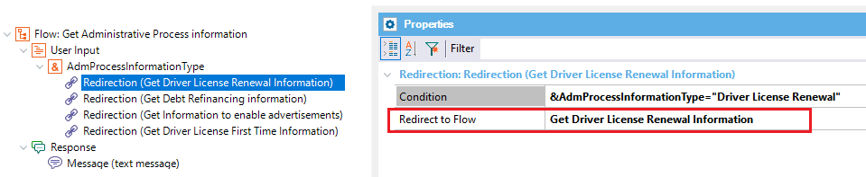

Select an existing flow to redirect the conversation when the current condition is true. Description
This property is available for the Chatbot User Input Redirections nodes of the Flow of a Conversational instance. When the Condition Property evaluates to True, the flow redirects to another flow, indicated under the Redirect to flow property.  AvailabilityThis property is available since GeneXus 16 upgrade 5. Scope Objects: Conversational Flows Instance See Also
|
| Backlinks | |
| Chatbot User Input Redirections | |
| HowTo: Send and receive a message from the Provider | User Input Redirections Condition property |